Data Literacy Project • University of Tübingen • Winter 2025/26
Long Overdue: Bus Delay Patterns in Tübingen
This site is a compact companion to the paper. It keeps the historical analysis central and presents the main evidence in one readable order: overview, interactive exploration, interpretation, and figures.
Abstract
Most buses remain close to schedule, but distinct corridors, times of day, and route positions produce recurring pockets of unreliability around the city and university infrastructure.
Interactive Atlas
Data explorer
Start with one period or route, then inspect the map, summary statistics, and segment table. The explorer is designed to support the paper, not replace it.
1Choose a period
2Select a line
3Inspect the map
4Check the summary
Historical filters
Viewing all lines across the full collection window. Choose a specific line to reveal the route-level interactive map.
Current selection
Whole-network view
The combined network is best for structural context. Route-specific exploration becomes readable only once the graph is narrowed to a single line.
502
segments in current slice
31,776
observed trips
15.28 min
mean segment delay
All lines selected
Start with the full network, then narrow to a route.
The complete graph is useful for structural context but visually dense. Select a single line when you want readable stop sequences and route-specific delay patterns.
Selection summary
65.9 min
maximum observed segment delay
Loading...
busiest segment in this slice
Loading...
highest-delay segment in this slice
Inspect segment-level table
Rows are ordered by descending mean delay so the most problematic links appear first. Trip counts help separate structural issues from sparse outliers.
| From | To | Avg delay | Trips |
|---|
Method Summary
Methodology in brief
Collection
TRIAS stop events paired with weather observations
We collected 140,363 observations from 366 stops through the TRIAS 1.2 interface (MobiData BW) and matched them with DWD-based weather via Bright Sky. Delay is defined as estimated minus scheduled arrival time.
Representation
Routes become segment graphs instead of isolated stop snapshots
Consecutive stops within a journey are linked into edges so the analysis can study where delay accumulates, not just whether a single stop was late in isolation.
Appendix
Optional live departures
This present-day view is separate from the study period and appears only as contextual reference after the historical material.
Open live departure board
Choose a stop
The board below is not part of the historical inference. It is included only as a current operational snapshot for selected central stops.
Official real-time departure board
Live data source: MobiData BW real-time departure monitor. Because it reflects the current day, it is kept separate from the historical paper period.
Result Summary
Key findings
The strongest signals are structural. Route length, time-of-day rhythm, and schedule design matter more consistently than weather alone.
Lines and places
Delay concentrates on specific routes and campus corridors
The heaviest delays are not evenly spread. Line 34, line 32, line 21, and several night services stand out, while major stops such as Hauptbahnhof and the university-clinic axis dominate traffic volume.
Temporal pattern
Schedule change and route progression both matter
The December 14, 2025 change corresponds to a marked improvement, yet delays still accumulate along longer sequences. Mean delay rises as a vehicle moves deeper into its route.
Figures
Delay analysis
All figures remain period-sensitive where appropriate. Use the period selector above to switch the historical slice while keeping the schedule comparison view on the combined dataset.
Delay distribution with CDF
Bars show the empirical distribution while the red curve lets readers directly read cumulative reliability.
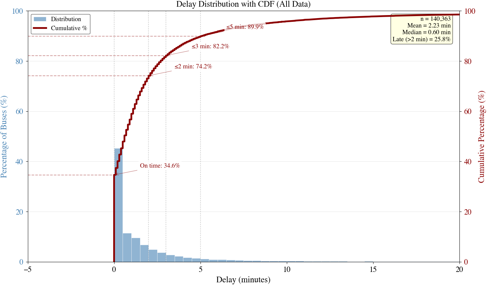
ECDF versus histogram
The ECDF view avoids arbitrary binning and makes probability statements about delay much easier to read.
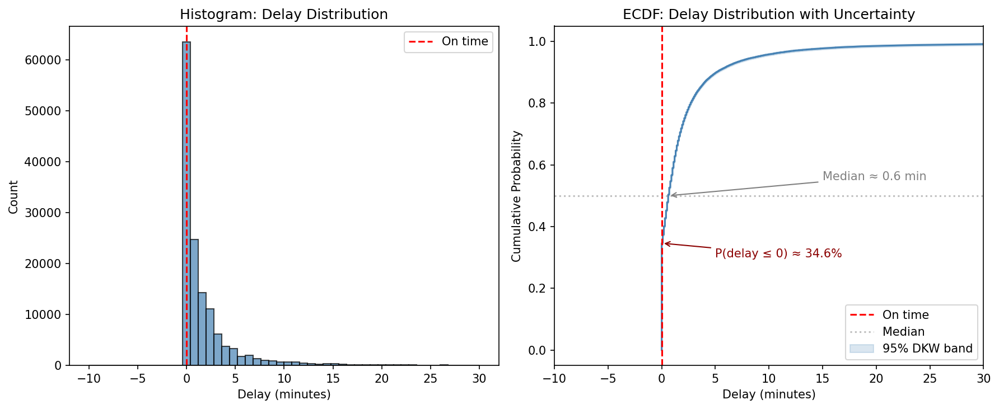
Combined exploratory dashboard
A compact four-panel summary of distribution, hourly pattern, ECDF, and the worst-performing lines.
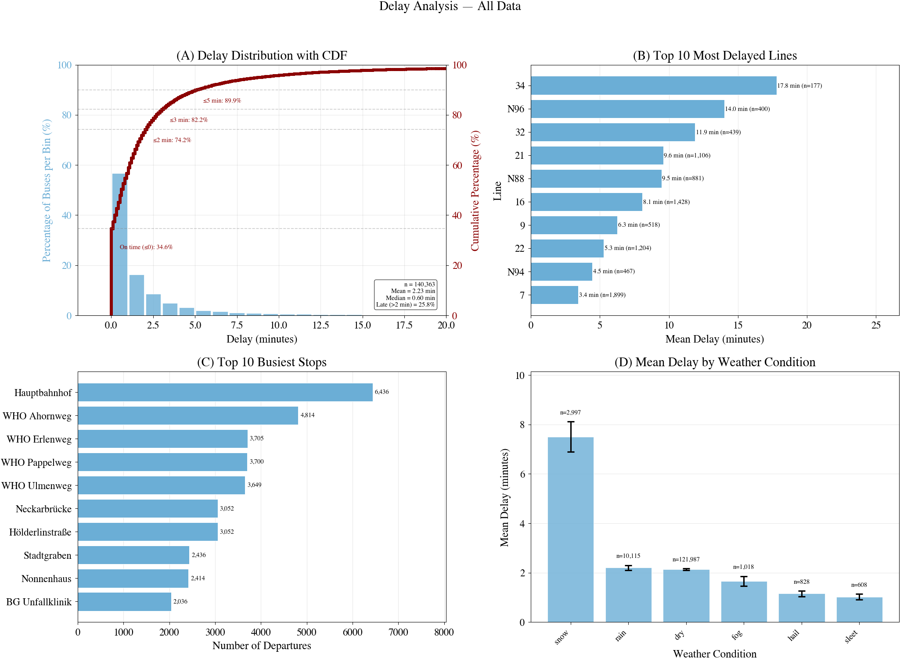
Late rate versus mean delay
Late rate is often more interpretable than the mean because it is less distorted by the long tail of extreme events.
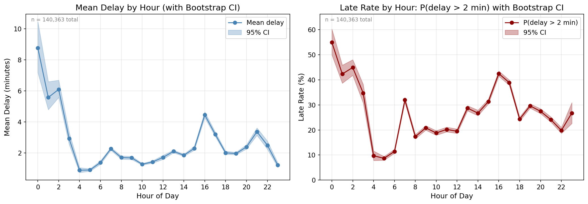
Late rate by hour
Bootstrap intervals show where delay risk systematically rises through the day.
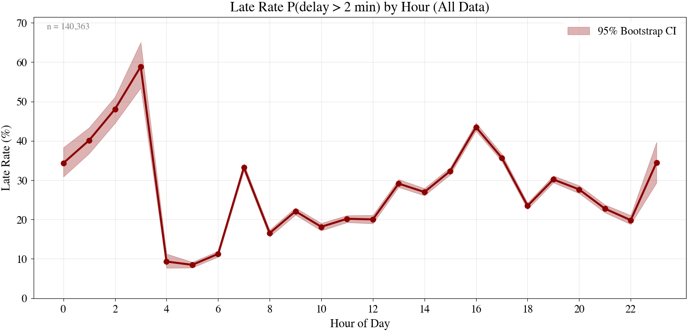
Weather effect with confidence intervals
Weather matters, but it explains less variance than route structure and scheduling patterns.
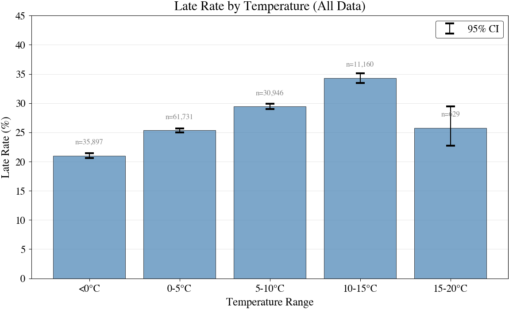
Weather versus time of day
This figure compares the explanatory power of environmental conditions and temporal rhythms.
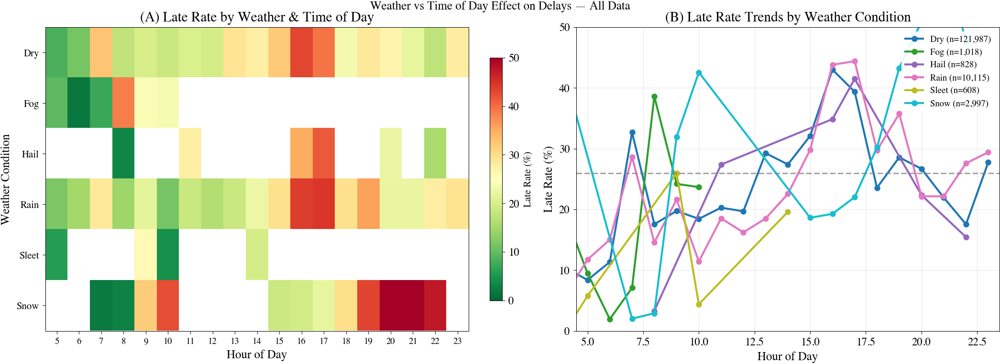
ECDF before and after the intervention
The after-schedule curve shifts left, indicating better reliability after the timetable change.
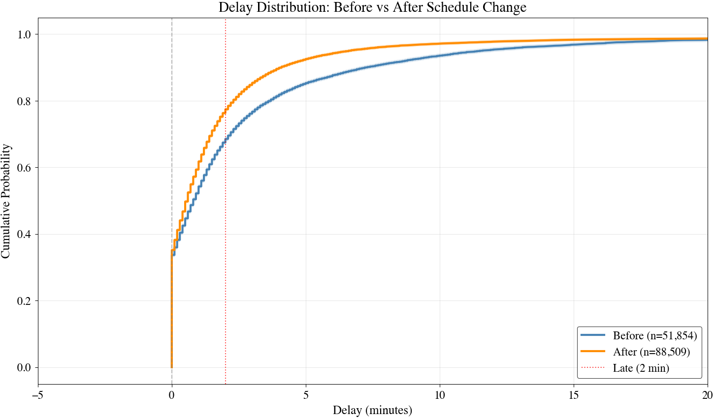
Full schedule change comparison
On-time rate, late rate, and distribution shifts are shown together to make the intervention legible at a glance.
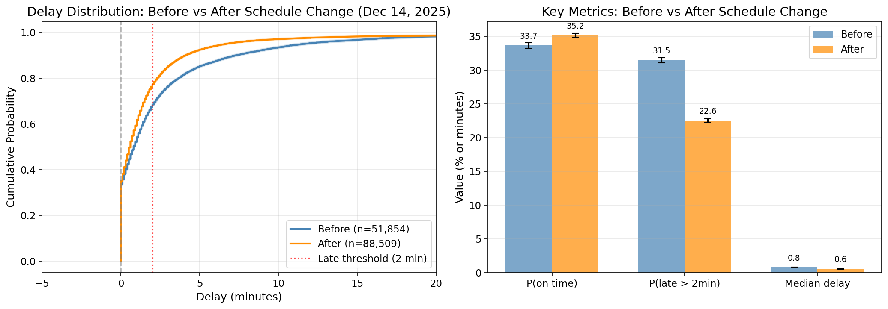
Quantile analysis
Quantiles communicate reliability far better than raw means in a strongly skewed delay distribution.
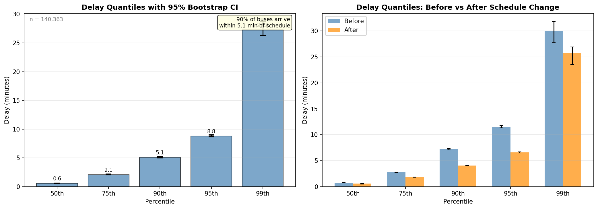
Top stops by late rate
Delay risk varies substantially across the network, and some campus stops exhibit very high late rates.
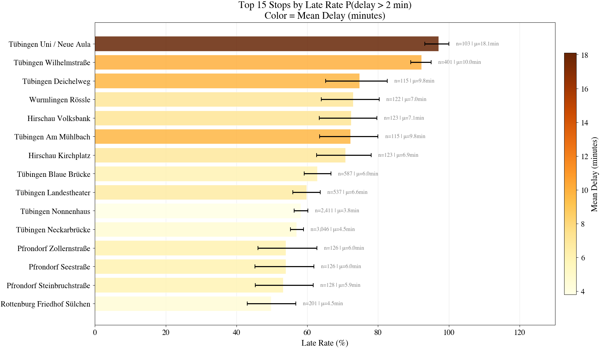
Day-of-week effect
Weekday and weekend dynamics differ, with specific weekdays showing the heaviest late rates.
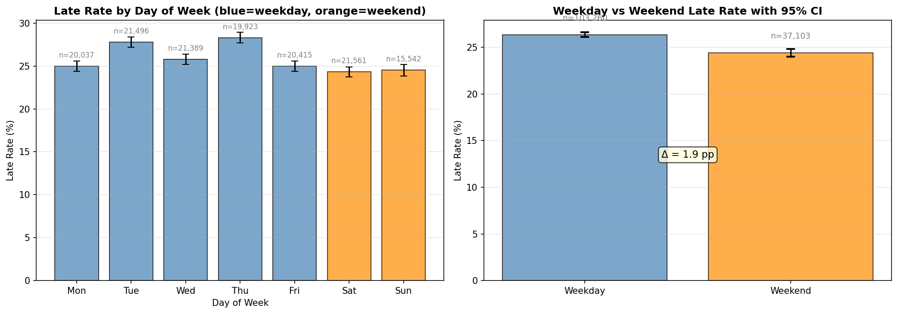
Extreme disruption analysis
A small fraction of trips creates a large share of the distortion in mean-based statistics.
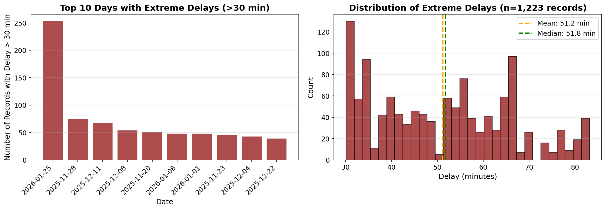
Delay accumulation along the route
This is the clearest structural result: later stops tend to inherit and amplify earlier delay.
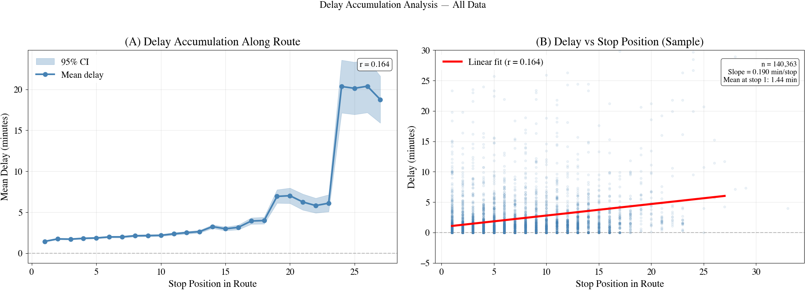